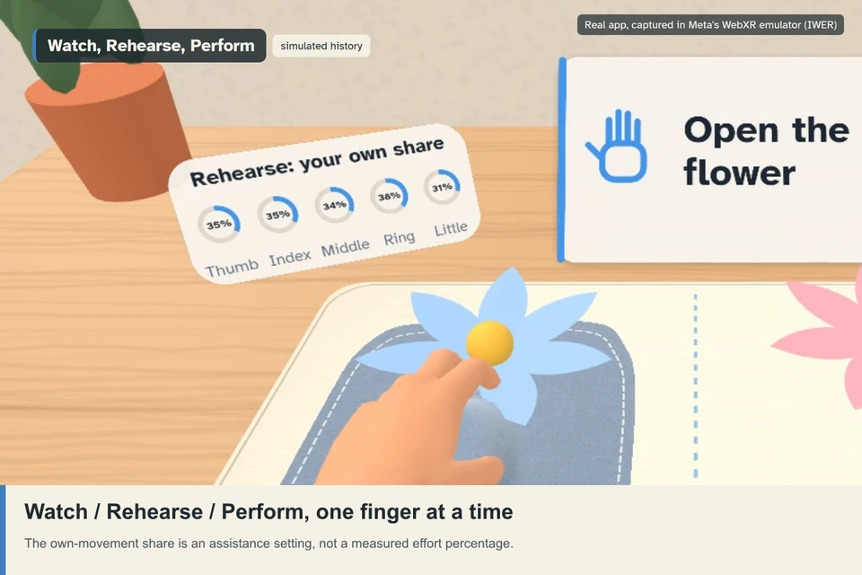
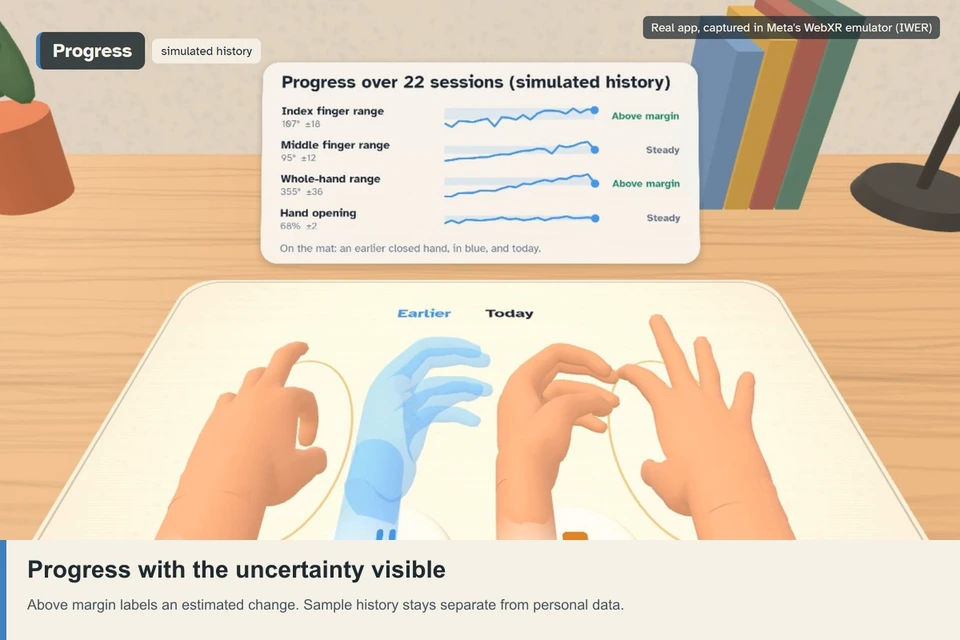

One mirror.
A share for each finger.
The working hand leads its reflection above a weaker hand. Repeated measurements guide how much of each finger’s displayed movement comes from that reflection and how much comes from its own tracked movement.
Explore the actual appWatch first-time setup
The desktop preview uses Meta’s IWER emulator. Its hands and sample history are simulated. This page can be read without running the emulator.
The short handover showcase uses a prepared calibration and keeps attempt detection open so you can compare the displayed blend. Watch a complete later session to inspect calibration and attempt detection in the full routine.
The daily loop
- Measure. Three trials of opening, fist and thumb reach. Unavailable readings stay unavailable.
- Set assistance. A separate share for each finger, changed only beyond an estimated error margin.
- Exercise. Flower, piano, thumb touches and rhythm build the baseline; later visits add stones to the bowl, turn the dial, spread and close, and wave. Pause and Stop stay within reach.
- Return. Compare the next measurement and an earlier closed-hand pose at the same table.
The room has a role
Passthrough keeps the working hand and table visible. Scene surfaces place the station; resting fingertips provide a fallback. An anchor can restore the station within reach on a later visit.
Hand joints drive the reflection, measurement and buttons. Controls support one-hand poke, hover dwell, thumb confirmation and head-direction gaze.
Head gaze means headset direction. Physical tracking, room placement and anchor persistence still need device validation.
Explore range, margin and assistance
Explore 21 simulated visits. These values come from the same model and assistance rule used by the app. A flat or noisy measurement should not move a finger’s setting each day.
The interactive sample loads when JavaScript is available. A share is the rendered blend, rather than a measurement of effort.
Range is summed finger flexion in degrees. The change margin is MDC95 = 1.96 × √2 × SEM. Progress compares with its historical baseline; the assistance rule uses a separate last-change anchor. Neither establishes clinical recovery.Handover

Watch follows the reflection. Rehearse blends reflected and own motion. Perform follows own motion. The thumb uses the fingers’ average share because it has no separate finger-range metric.
The next visit

Progress preserves the uncertainty: Above margin, Below margin, or within the estimated margin. Personal history stays local; sample sessions use separate temporary storage.
What has been verified?
What needs separate validation?
Tracker accuracy, anchor persistence, comfort, intended-user usability and clinical benefit.
The stated simulation misses its original 5° single-finger attempt-detection target. Very small movements can be missed. The full routine can continue in Watch when a measurement is unavailable.